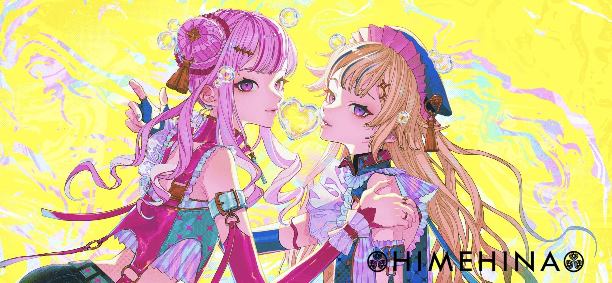
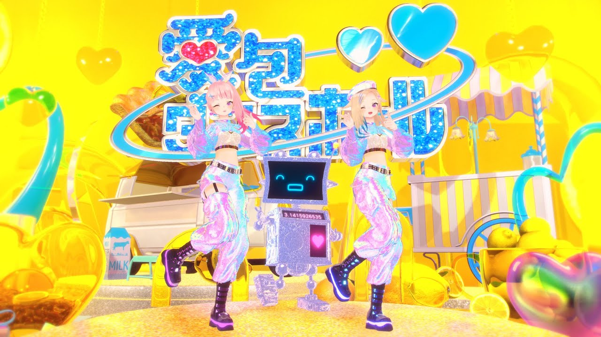
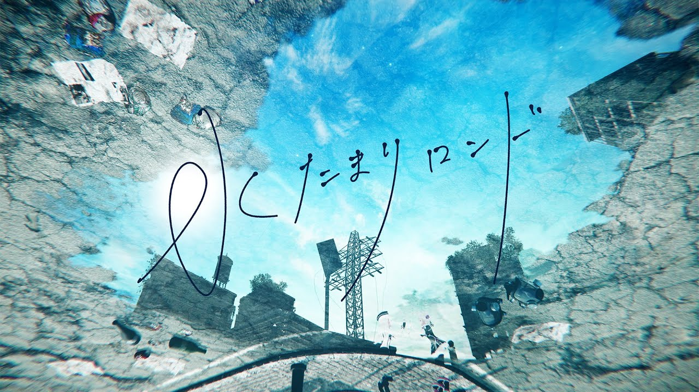
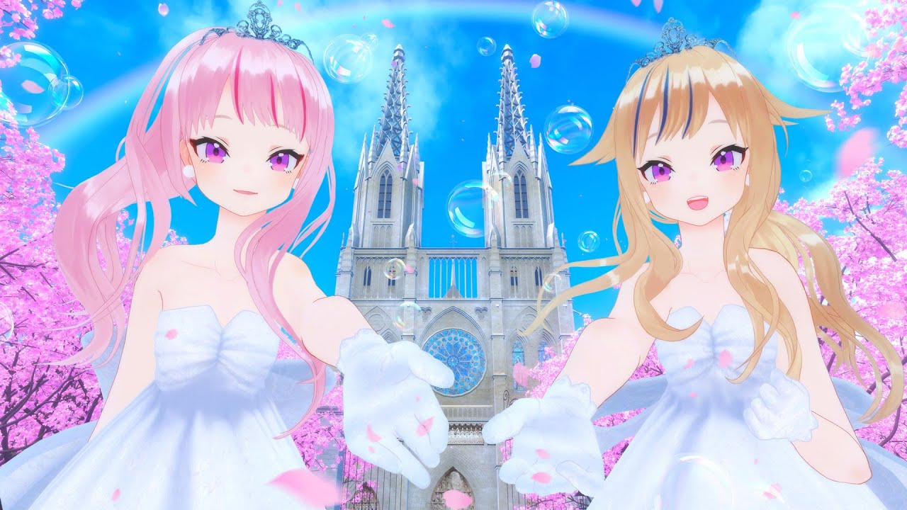
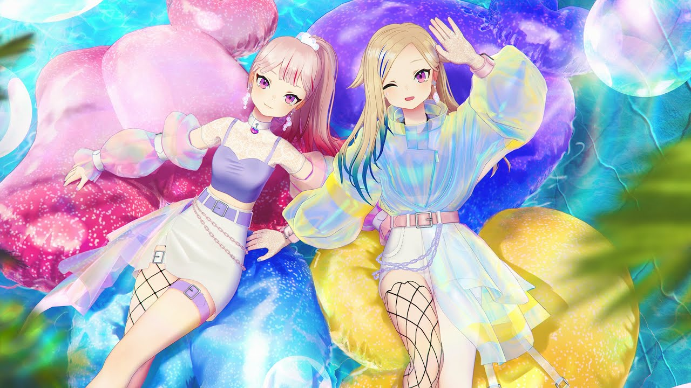
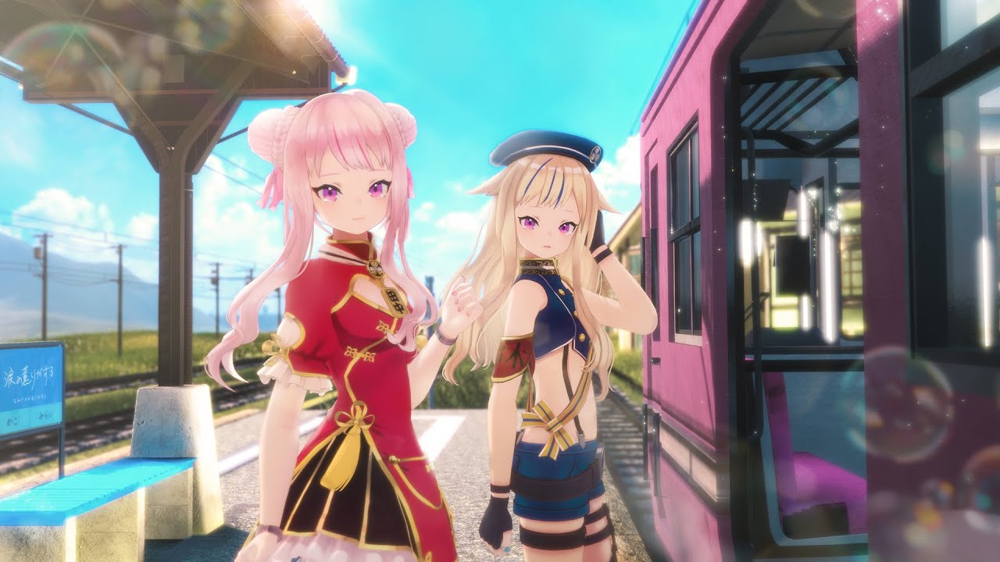

ハイトーンボイスと明るい性格が特徴の
バーチャルアーティスト。
落ち着いた低めの声とツッコミ役で人気を集める
バーチャルアーティスト。
03月18日 田中ヒメがYoutubeで活動開始
05月29日 鈴木ヒナが合流し、ヒメヒナチャンネルが誕生
08月26日 YouTubeチャンネルが10万人を突破
01月09日 初のオリジナルソング「ヒトガタ」配信開始
09月27日 「HIMEIHNA 1st ワンマンライブ『心を叫べ』」を開催
02月28日 『田中音楽堂オトナLIVE 2020 in TOKYO「歌學革命宴」feat.鈴木文学堂』を開催
04月15日 1stアルバム「藍の華」が発売
02月07日 『HIMEHINA LIVE 2021「藍の華」』を無観客オンライン配信で開催
07月21日 2ndアルバム『希織歌』が発売
11月09日 『HIMEHINA LIVE 2021「希織歌と時鐘」』を無観客オンライン配信で開催
05月06日 『HIMEHINA Live2Days 2022「アイタイボクラ」 day1』を開催
05月07日 『HIMEHINA Live2Days 2022「アイタイボクラ」 day2』を開催
上記同日 運営母体である田中工務店を法人化し、株式会社LaRaを設立したことを発表
05月24日 3rdアルバム『提灯暗航』が発売
08月05日 『HIMEHINA LIVE 2023「提灯暗航、夏をゆく」』を開催
上記同日 音楽活動の本格化、日本武道館ワンマン目標(5年以内)を発表
11月01日 株式会社LaRaが株式会社Brave groupと経営統合を発表
08月02日 『HIMEHINA LIVE 2024「涙の薫りがする」 day1』を開催
08月03日 『HIMEHINA LIVE 2024「涙の薫りがする」 day2』を開催
上記同日 全国ツアー(西)(福岡、大阪、名古屋)の開催を発表
12月26日 YouTubeチャンネルが100万人を突破
03月01日 『HIMEHINA 7周年LIVE day1「田中音楽堂 RealLive ～姫雛合唱宴～」』を開催
03月02日 『HIMEHINA 7周年LIVE day2「ザ・ベストニジュー」』を開催
07月02日 4thアルバム『Bubblin』が発売
11月22日 『HIMEHINA LIVE 2025「LIFETIME is BUBLLIN」 day1』を開催
11月23日 『HIMEHINA LIVE 2025「LIFETIME is BUBLLIN」 day2』を開催
上記同日 『HIMEHINA ASIA Tour 2026「LIFETIME is BUBLLIN」』の開催を発表

ポップなメロディーと楽しげなMVが特徴的でTikTokで
ダンスがバズり、ヒメヒナの代表曲のひとつです。
YouTubeでは再生回数4600万回再生されており、まだまだ伸び続けている曲です。

この曲はコロナウイルスが流行っていた時期に投稿された曲で、歌詞の中で「ディスタンス」や「感染」などあの時を思い出すようなワードが出てきます。
そんなつらい時でもいつかは自由な世界が帰ってくるという思いを「世界は晴れあがる」という言葉にして表現している会えない時間を描いた曲です。

この曲もコロナウイルスが流行った時期に投稿された曲です。
会えなかった空白の２年間を乗り越え、みんなでまた集まってライブをできた感動、そして会えなかった期間を忘れずにこれからもずっと 一緒にいようという気持ちを綴ったヒメの作詞曲です。

4thアルバムの「Bubblin」に入っている曲でポップな曲調と楽し気なMVがとりこになる曲です。
たくさんのパロディやストーリー性のありそうなMVで最初から最後まで楽しめる曲です。

2024年の8月2.3日に行ったライブ「涙の薫りがする」のタイトルになった曲で出会いと別れを書いた曲です。
仲間との別れやコロナ禍で実現できなかったライブの辛さを乗り越え、未来へ向かう前向きな決意や、 ライブに来てくれたファンへの感謝と再会を約束を描いた曲です。